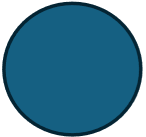

Proposito de la Unidad: conocer la simbología de los diagramas de flujo y aplicarla en el diseño de algoritmos, los cuales propiciarán al desarrollo de una propia metodología para la resolución de problemas cotidianos
Un problema en terminos generales es un obstaculo que no nos permite continuar con el desarrollo normal de una actividad o un vacio de información que nos impide solucionar una situación teórica o práctica. Un problema es una situación adversa que enterpece la posibilidad de obtener resultados esperados (Romero Moran, 2011), hay otras definiciones como que es un conjunto de hechos o circunstancias que dificultan el éxito de algún fin. Por naturaleza cuando detectamos que tenemos un problema sentimos la necesidad de aclarar o resolver esa situación y que puede tener un número determinado o indefinido de soluciones, es importante identificar el origen del problema, y esto nos llevará a encontrar la solución.
En nuestra vida cotidiana resolvemos problemas en cada momento cada decisión que tomamos o acción empeora o resuelve nuestros problemas, la manera de cómo resolvemos nuestros problemas es muy importante en nuestro método, o depende el resultado sea más óptimo, a veces cuando observamos a alguien enfrentarse una situación problemática, pensamos en diferentes alternativas a la que esta persona esté empleando uno esto porque cada persona razona diferente, utilizando herramientas como conocimientos, habilidades y experiencias que han obtenido. Metodología: es un término que proviene de las palabras griegas, meta, que significa más allá o que es camino y logos significado, estudio o razón. La metodología es el conjunto de procedimientos que tienen como objetivo alcanzar uno o varios objetivos.

En esta fase se deben contestar las preguntas ¿Qué quieres lograr?, y ¿Qué quieres hacer?, osea tienes que tener una idea clara de cual es el final o delimitación. Cuando se haya identificado el problema, debe crearse una idea clara y completa de el mismo, para estar consciente de lo que debe llevarse a cabo. Mientras el problema no se conozca del todo, no tiene caso seguir con el planteamiento de alternativas para su solución. En este punto identifica y resalta datos que consideres necesarios para solucionar el problema. Por ejemplo: Un alumno se pregunta que porcentaje de trabajos tiene durante el semestre 2021-2022, ya que de esto depende su derecho a final, el semestre se dividio en 3 parciales, el primer parcial tuvo 6 semanas, el segundo parcial tuvo 4 semanas y el tercer y ultimo parcial fue de 5 semanas, el maestro pedia 3 ejercicios; uno el lunes, miercoles y viernes. En sus cuentas, el alumno tiene 33 trabajos enviados, tomando en cuenta que necesita el 80% de trabajos para no irse a extra
Un problema puede tener varias soluciones, sin embargo, debes poner atención y seleccionar la que sea más eficaz y genere la menor cantidad de efectos secundarios, o los menos nocivos. Una alternativa debe seleccionarse, sólo cuando el paso número uno esté claro y se hayan analizado todos los posibles escenarios de solución de acuerdo a las necesidades.
Por ejemplo (retomando el ejemplo de el paso 1)
Alternativa 1
Alternativa 2
Cuando todas las posibilidades o soluciones han sido planteadas, se debe elegir una de ellas, por lo general siempre se recurre a aquella que tenga un número de pasos menor o la que se cree tendra menores efectos secundarios o consecuencias. Por ejemplo, en base a las alternativas anteriormente mencionadas en el Paso 2, la alternativa 2 resulta más fácil de ejecutar.
Posteriormente, debes reunir los elementos y las herramientas que necesites para resolver el problema de acuerdo con la alternativa de solucion seleccionada; recuerda que no debes perder de vista tu objetivo y cuanto deseas profundizar en la problematica
En esta fase se compara si la alternativa de solución seleccionada funciona correctamente para los diversos escenarios o situaciones posibles que se puedan presentar. Si al evaluar distintos escenarios encuentras error es conveniente regresar a la fase 1, por el contrario si en diversos escenarios funciona bien significa que lograste el objetivo
A continuación se muestra un ejemplo:
Se requiere hacer una compra millonaria de un producto que se vende en 2 presentaciones, la primera es de 900ml y su costo es de $55, la segunda presentacion es de 9 lt y su costo es de $295, es necesario tomar una decisión pues pronto sugerimos haciendo compras de la misma magnitud economica, pero de diferentes productos.
Es una serie de pasos o instrucciones necesarios para conseguir un objetivo. Ejemplos:Recetas, instrucciones de instalación de un software, pasos para el llenado de un formato, etc, se pueden representar principalmente por diagramas de flujo y pseudocodigos
Características:
Medios de expresion de un algoritmo:
Ejemplo de algoritmo Natural:
Inicio
Fin
Otro ejemplo, ahora copiar archivo de documentos a imagenes
Inicio
Fin
en algunos casos necesitamos resolver problemas de calculo tal como el área de un rectángulo o el perímetro de un círculo, o cuando sales comer y se dividen en la cuenta o cuando se tienen que pagar gastos mensuales, cuando se elaboran algoritmos en los que se tiene que utilizar números, los operadores racionales y aritméticos, juegan un papel importante.
operadores relacionales
| símbolo | significado |
| < | menor qué |
| == | igual que |
| ≥ | mayor o igual que |
| > | Mayor que |
| ≤ | menor o igual que |
| < >! | no igual o diferente |
| + | suma |
| - | resta |
| * | multiplicación |
| / | division |
| ** | elevar un exponente |
si no hay paréntesis el orden, es así 1 exponentes y raíces, 2, multiplicación y división, 3 suma y restas, si hay paréntesis ese es el primero
es una aproximación entre un algoritmo y un verdadero código en algún lenguaje de programación. La diferencia entre un pseudo código y un lenguaje de programación está en que el pseudo código se utiliza en palabras comunes al programador, incluso en ocasiones en en idioma propio, y no se requieren encabezados para incluir variables y biblio bibliotecas, enfocándose en el proceso. Es una herramienta de programación para desarrollar algoritmos. El pseudo código es un lenguaje para especificación de algoritmos con una sintaxis para las estructuras de control similar a la expresada en un lenguaje de programación.
| Estructura | Pseudocodigo |
| inicio | begin |
| entrada y salida de datos | read x, write x |
| sentencia | calcular x=y+3 |
| seleccion | if condic, entonces accion 1, else accion2 |
| repeticion | do while accion1, accion2 |
| fin | end |
Ejemplo con area de el rectángulo
Como podemos ver, en Pseudocodigo se usa un lenguaje más "tecnico" que en lenguaje natural
| Figura | Nombre | Significado |
|
Rectangulo | Procedimiento: indicar asignación de un valor a una variable o un procedimiento y operación matemática |
| Flecha | flujo: permiten enlazar los símbolos de sentido único, pueden ser horizontales o verticales, no pueden entrecruzarse y deben tener un símbolo de partida y uno de destino | |
|
paralelogramo | lectura/ captura: permite indicar la entrada de datos desde un dispositivo estándar, (teclado,scaner etc.) |
|
óvalo | inicio/ fin: se usa para indicar el punto de inicio y de finalización |
|
rombo | decisión: establece condicional relacional o lógica que puede tomar un valor de verdadero o falso, de este, se debe dos en dos flujos o alternativas de ejecución |
|  | círculo | conectores: dan continuidad al diagrama, si la página o área de trabajo está llena. El círculo se Utiliza como corrector dentro de la misma página |
| hexágono | decisión múltiple:(con varias flechas en cada un0 de sus vertices, segun haya decisiones) almacena un lector que determina la rama por la que sigue el flujo | |
|
no tiene nombre geométrico definido | impresión: indica realización de operaciones de salida, También la presentación de uno o varios resultados en forma impresa |
Los diagramas deben tener un inicio y un fin, las líneas deben ser verticales y horizontales, indicando la dirección del flujo. Todas las líneas deben de estar conectadas. El diagrama de flujo debe construirse de arriba hacia abajo y de derecha a izquierda no puede llevar más de una línea en un símbolo.